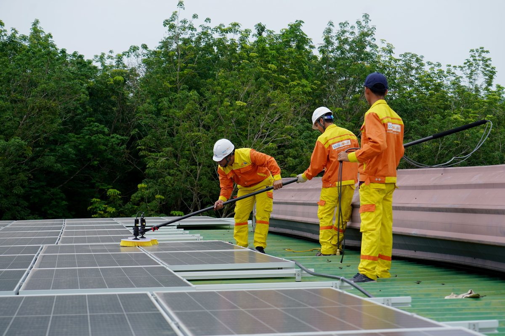

Solar panels are often marketed as "maintenance-free," and in the sense that they have no moving parts to wear out, that's true. But maintenance-free doesn't mean cleaning-free — dirt, dust, and debris buildup is the single most common reason a working solar system quietly produces less than it should, without ever showing an obvious fault.
How much does dirt actually reduce output?
The impact varies a lot depending on climate and how long panels go between cleanings:
- Light dust in moderate climates — typically a 2–5% output loss, often washed away naturally by occasional rain.
- Heavy dust in dry or desert regions — can realistically cut output by 20–30% or more between cleanings, especially where rain is rare for months at a time.
- Bird droppings, leaves, or localized debris — can create a "hot spot" on the shaded cell, which is worse than uniform dust because it concentrates the loss on one small area of the panel rather than spreading it evenly.
Working on the Al-Mahmadiyah project in Ma'an, Jordan, I saw firsthand how much dust accumulation can hurt panel output in desert conditions — a heavily dust-covered panel can lose half its efficiency or more before it's ever cleaned. Keeping panels clean on a regular schedule is what actually gets you close to the numbers printed on the datasheet, not just the initial installation angle or panel quality.
How often should you clean solar panels?
| Climate type | Suggested cleaning frequency |
|---|---|
| Rainy / temperate climates | Every 6–12 months, or as needed |
| Dry climates with occasional rain | Every 2–3 months |
| Desert / high-dust regions with little rain | Monthly, or whenever visible dust buildup is noticeable |
| Near construction, farmland, or heavy traffic | More frequent — check visually every few weeks |
A simple way to know if it's time: check your system's output on a clear, sunny day against what your panel count and peak-sun-hours would predict (see our panel calculator). A noticeable gap that doesn't recover with a light rain is usually a sign it's time to clean.
Safe cleaning methods
- Clean early morning or evening — never clean hot panels in direct midday sun. Rapid temperature changes from cool water hitting a hot glass surface can cause micro-cracks over time.
- Use plain water and a soft brush or squeegee — a garden hose with a soft brush attachment works for most residential setups. Avoid pressure washers, which can damage seals and cell connections.
- Avoid harsh chemicals or abrasive cleaners — plain water is usually enough. Soap or detergent residue can actually attract more dust once it dries.
- Never step directly on panels — this can crack cells invisibly, causing hot spots that reduce output or become fire risks later. Clean from the edges of the roof or with an extended pole where possible.
- Check the mounting hardware while you're up there — loose brackets or frayed cable insulation are easy to spot during a cleaning pass and cheap to fix early.
When to call a professional instead of DIY
Cleaning ground-mounted or easily accessible panels is a reasonable DIY task for most homeowners. Consider hiring a professional when:
- Panels are on a steep or high roof where a fall risk is involved
- The system is large enough that manual cleaning would take an entire day
- You notice actual damage (cracked glass, discoloration, or a hot spot) rather than just dust — this needs inspection, not just cleaning
- Your installer's warranty terms specify that only certified technicians should service the system without voiding coverage
Beyond cleaning: a simple maintenance checklist
- Visual inspection every few months — look for cracks, discoloration, loose mounting, or animal nests near cabling.
- Check inverter display or app readings — a sudden unexplained drop often points to a specific fault rather than general dust.
- Trim nearby trees or vegetation — growing branches can gradually introduce shading that wasn't there at installation.
- Schedule a professional inspection every 1–2 years — covers electrical connections and mounting integrity that aren't visible from a simple cleaning pass.
For a structured yearly routine, follow our annual maintenance checklist. Good upkeep is what lets panels reach their full expected lifespan, and in dusty hot regions cleaning matters even more — see solar panels in hot climates.
Frequently asked questions
Does rain clean solar panels well enough on its own?
Light rain helps with loose dust but often isn't enough on its own, especially for caked-on dust in dry climates or bird droppings, which tend to stick regardless of rainfall.
Will dirty panels damage the system over time, or just reduce output?
Uniform dust mainly just reduces output temporarily. However, localized debris causing a persistent hot spot can lead to actual long-term cell damage if left unaddressed, which is why spot-checking for uneven buildup matters more than the dust itself.
Is it worth paying for a professional cleaning service regularly?
For small residential systems in moderate climates, DIY cleaning a couple of times a year is usually enough to justify skipping a paid service. For larger systems, hard-to-reach installations, or high-dust regions needing frequent cleaning, a scheduled professional service often pays for itself in recovered output.